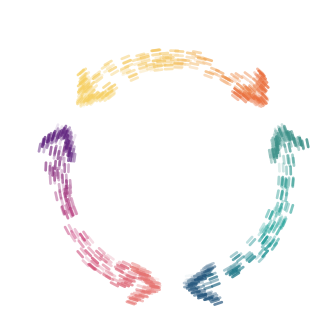

Attention Switch — track where your attention goes.
A project time tracker by Jovey. Record intentional task switches, capture notes, and reflect on your working day.
Enable JavaScript to start tracking, or read the Attention Switch guide.

Attention Switch every session's companionA project time tracker by Jovey. Record intentional task switches, capture notes, and reflect on your working day.
Enable JavaScript to start tracking, or read the Attention Switch guide.